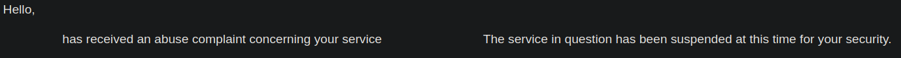

On November 14th 2022, Wapchan was attacked by a malicious actor who posted illegal content and self reported it, causing our host to take down the site. While we have dealt with automated spam for ages, this was a deliberate action designed to deplatform our community.
UPDATE I am in correspondance with our host, so things should be back online in a few days. I am leaving the below in case this does not occur.
I still have access to the older server Wapchan ran on from January-April, so I am putting up this site as a temporary holdover. I want to emphasize that WAPCHAN WILL RETURN!
Wapchan will remain an imageboard. The fourm idea was born out of desperation, but I realized that would kill the spirit of the site. Sorry for making you worry, /lum/frens.
Here's some actual plans to hopefully make this site workable:
It is tough trying to satisfy everyone especially when I am doing a bit of everything (dev/backend/frontend/server management), but hopefully I can get more staff to volunteer and help with all this.
At the end of the day, Wapchan is a passion project that serves no ads and makes no money. Sometime's its hard trying to manage this in addition to all the other stuff I do in my life, but hopefully you stick with me.
There's a bright future ahead for /ar/ and all the other boards around here.
Since the vast majority of Wapchan's services were self hosted, many will have to be setup once again. For those looking to discuss what is happening:
I am also avaliable at admin@wapchan.org.